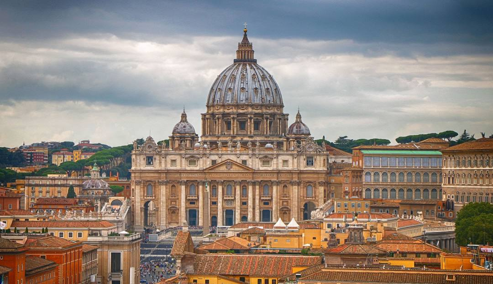

Vatican
I want to visit the Vatican because of its rich history and my deep interest in Christianity. The Vatican is home to some of the world's most iconic religious landmarks, like St. Peter's Basilica and the Sistine Chapel. Visiting this city-state would be a spiritual and historical experience.
